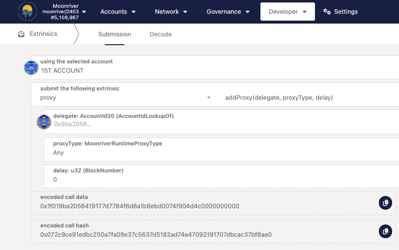
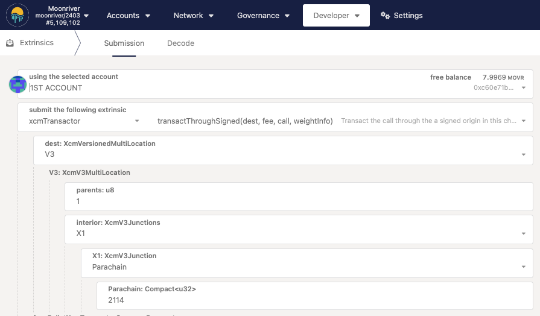
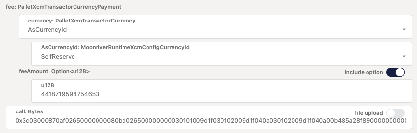
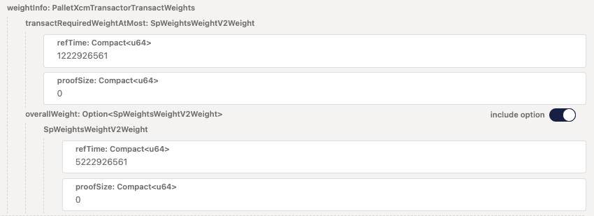
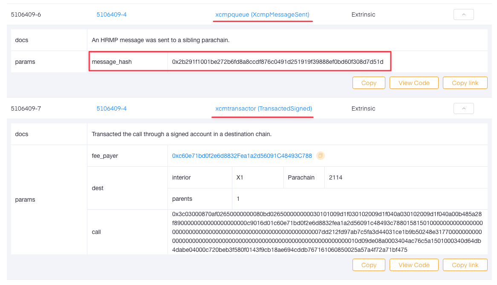
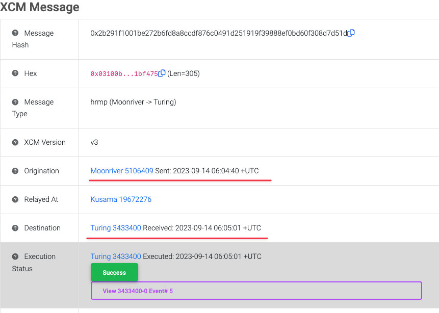
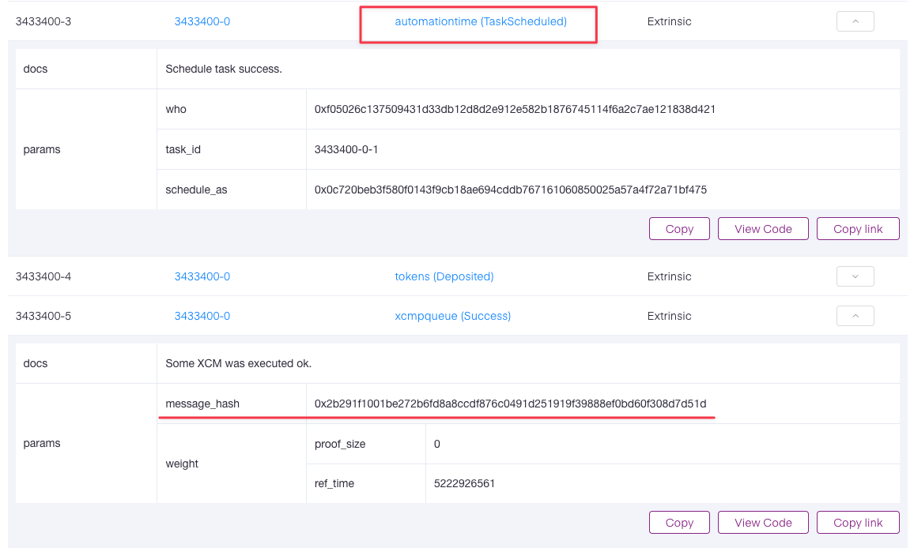

<!DOCTYPE html>
<html lang="en">

<head>
  <meta charset="utf-8" />
  <meta name="viewport" content="width=device-width, initial-scale=1.0, maximum-scale=1.0, user-scalable=no" />

  <title>Recurring Payment for Moonriver</title>
  <link rel="shortcut icon" href="./../assets/favicon.ico" />
  <link rel="stylesheet" href="./../dist/reset.css" />
  <link rel="stylesheet" href="./../dist/reveal.css" />
  <link rel="stylesheet" href="./../assets/styles/PBA-theme.css" id="theme" />
  <link rel="stylesheet" href="./../css/highlight/shades-of-purple.css" />

  <link rel="stylesheet" href="./.././assets/styles/custom-classes.css" />

</head>

<body class="site">
  <header class="site-header">
    <!-- This logo is a link only on the watching server, not the production build -->
    <a href="">
      
    </a>
  </header>
  <main class="reveal">
    <article class="slides">
      <section  data-markdown><script type="text/template">

# Recurring Payment for Moonriver

### Chris Li, founder of OAK Network

### 09.14.2023

<aside class="notes"><p>In this lecture, I will demonstrate how to send a simple transfer transaction on another chain using XCM on Moonriver, and an advanced use case to schedule recurring payment. The demo transactions will be dispatched from both polkadot.js app dashboard and in javascript.</p>
</aside></script></section><section  data-markdown><script type="text/template">
### _In this lecture, you will gain knowledge and skills in:_

<pba-flex center>

1. Navigate Moonriver’s xcmTransactor pallet
2. Grasp the concept of account abstraction for XCM executions
3. Practice the construction and execution of XCM messages.
4. Conduct XCM transactions between Moonriver and Turing Network.
5. Debug XCM using Moonbeam’s xcm-tools.
6. Explore OAK Network’s automation features.

</pba-flex>
</script></section><section  data-markdown><script type="text/template">
# Lecture Overview

<pba-flex center>

1. Define the product
2. Preparation
3. Compose XCM message
4. Build client code
5. Debug live
6. Advanced - recurring payment

</pba-flex>

<aside class="notes"><p>In this session, I will guide you through the process of building a real use case of XCM, specifically from the perspective of an dapp developer.</p>
<ol>
<li>Define Your Product: We&#39;ll start by defining the product or application we want to build, clarifying its objectives and functionalities.</li>
<li>Prepare Chain Config: Next, we&#39;ll prepare the necessary chain configurations, ensuring that our application is well-integrated with the target blockchain environment.</li>
<li>Compose XCM Message: We&#39;ll dive into composing XCM messages, which are crucial for communication and interactions between different components of our application.</li>
<li>Build Client Code: This step will involve the actual development of the client code for our application, implementing the logic and functionality we designed earlier.</li>
<li>Debug Live: Finally, we&#39;ll explore how to debug our application in a live environment, ensuring that it functions correctly and efficiently.</li>
</ol>
<p>By the end of this presentation, you&#39;ll have a comprehensive understanding of the XCM framework and be well-equipped to build your own applications effectively.</p>
<p>Let&#39;s get started!</p>
</aside></script></section><section ><section data-markdown><script type="text/template">
# Define the product

Objective: schedule a recurring payment on Turing Network by using Moonriver’s remote execution.

<aside class="notes"><p>In this demo, our main objective is to establish a seamless monthly recurring payment of MOVR on the Moonriver parachain.
To accomplish this, we will utilize a powerful extrinsic call, <code>automationTime.scheduleXcmpTask</code>, executed remotely on the Turing Network.
This will trigger a payment at the end of each month, ensuring a smooth and automated payment process.</p>
</aside></script></section><section data-markdown><script type="text/template">
## What we need to do

We need to perform one essential operation, which is to remotely execute automationTime.scheduleXcmpTask on the Turing Network.

To execute this operation, we will interact with the following components:

- Source Chain: Moonriver
- Source XCM Version: V3
- Source Extrinsic: `xcmTransactor.transactThroughSigned`

<br/>Consequently, it will initiate the remote execution of the following call:

- Target Chain: Turing Network
- Target XCM Version: V3
- Target Extrinsic: `automationTime.scheduleXcmpTask`
</script></section><section data-markdown><script type="text/template">
Upon successful XCM execution, a TaskScheduled event will fire on the Turing Network, indicating that the remote call has been executed successfully, thereby creating an automation task.

<figure>
  
  <figcaption>High-level product flow between Moonriver and Turing Network</figcaption>
</figure>

<aside class="notes"><p>explanation - The XCM call sets up a recurring task, that will auto-transfer of MOVR at the end of every month.
Turing Network is responsible for triggering the action when its condition is met.
The overall flow of the entire product is shown in the diagram below.</p>
</aside></script></section></section><section ><section data-markdown><script type="text/template">
# Preparation

To kickstart our journey, we will begin by interacting with Moonriver's `xcmTransactor` pallet, which is similar to Polkadot/Kusama's `xcmPallet`.
Before diving into the actual XCM message, it is essential to ensure that we meet certain prerequisites:

<aside class="notes"><p>For this demo, we are using the existing xcmPallet built in Polkadot and Kusama.
This pallet provides common extrinsic interfaces that developers can use to easily compose an XCM message.
Moonriver has further encapsulated the function to make their own xcmTransactor.</p>
</aside></script></section><section data-markdown><script type="text/template">
1. Ensure Barriers on the recipient chain.<br/>
   In this case, an Allow Barrier\*\* `WithComputedOrigin<Everything>`, needs to be configured in the XCM config of Turing Network.
   This Barrier will allow the DescendOrigin instruction in XCM, which will reassign the origination of the transaction on Turing from Moonriver's sovereign account to the user's proxy account.
1. Configure user’s remote wallet on the recipient chainThe remote wallet, or proxy wallet acts as an account abstraction, allowing the blockchain to execute specific code on behalf of the user.

<aside class="notes"><ol>
<li>We covered the Barrier topic in the previous chapter.
Barriers are responsible for creating Allow or Deny rules for incoming messages.
By adding this Barrier, we allow the DescendOrigin instruction in XCM, which will reassign the origination of the transaction on Turing from Moonriver&#39;s sovereign account to the user&#39;s proxy account.</li>
<li>This remote wallet acts as an account abstraction, empowering the blockchain to execute specific code on behalf of the user.
By utilizing a user&#39;s sub-wallet for a specific extrinsic call, we create granular control, allowing the user&#39;s wallet to perform the necessary actions efficiently and securely.</li>
</ol>
</aside></script></section><section data-markdown><script type="text/template">
[Moonbeam Docs: Calculate Derivative Account](https://docs.moonbeam.network/tutorials/interoperability/remote-batched-evm-calls/#calculating-your-multilocation-derivative-account)

<figure>
  
  <figcaption>Extrinsic to add calculated derivative account as a proxy</figcaption>
</figure>
</script></section></section><section ><section data-markdown><script type="text/template">
# Compose XCM message

In this section, we will initiate the execution by calling the `xcmTransactor.transactThroughSigned` extrinsic on Moonriver.

<aside class="notes"><p>This extrinsic serves as the gateway to composing the XCM message, incorporating all the necessary instructions for the desired cross-chain message.</p>
</aside></script></section><section data-markdown><script type="text/template">
## XCM configs

The following are the parameters you need to decide before sending an XCM message:<br/><br/>

1. **Version number**: Check the XCM version on both recipient (Turing Network) and source (Moonriver) chains.
   Ensure their XCM versions are compatible.
1. **Weight**: Each chain defines a different weight for XCM instructions, impacting computation, storage, and gas fees.
1. **Fee per Second**: If using an asset other than the recipient chain's native token (TUR) to pay fees, establish the MOVR-to-TUR conversion rate.

<aside class="notes"><p>In section #4 of the Chain Config in XCM document, we have reviewed various chain configurations.
In this section, we will illustrate their usage through our demo.
Although there are several variables to be decided, once you become familiar with them and establish a few templates, you can continue to use them.</p>
<ol>
<li>For example, V3 is backward compatible with V2 but the its config requires safeXcmVersion set.</li>
<li>The weight of an XCM instruction is defined with a different value on each chain.
It specifies how much computational power as well as storage (PoV size), are required for the execution of each instruction and determines the gas, or fee, for the XCM execution.</li>
<li>In addition to the weight, if we use an asset other than the native token of the recipient chain, TUR in this case, to pay for the fee, the value of the asset must be converted in relation to the recipient chain&#39;s native token.
The Fee per Second defines the conversion rate between MOVR and TUR, assuming we want to use MOVR to pay for all the fees in this transaction.</li>
</ol>
<p>With these parameters decided, proceed to construct the instruction sequence for the XCM message.</p>
</aside></script></section><section data-markdown><script type="text/template">
## Message elements

To construct the XCM message, we utilize Moonriver's `xcmTransactor.transactThroughSigned` extrinsic, which requires the following parameters:

**Destination**: It specifies the target chain, or for our case, the Turing Network, identified by {Relay, 2114} on Kusama.

<br/>

<figure>
  
  <figcaption>Destination parameter in transactThroughSigned</figcaption>
</figure>
</script></section><section data-markdown><script type="text/template">
**InnerCall**

This represents the encoded call hash of the transaction on the destination chain.
This value will be passed on to the Transact XCM instruction.

[Encoded calldata on Turing polkadot.js app](https://polkadot.js.org/apps/?rpc=wss%3A%2F%2Frpc.turing.oak.tech#/extrinsics/decode/0x3c030004000000000000000003010100a10f03010200a10f040303010200a10f040300a0e7ae395d64000000000000000000c90126018097c3c354652cb1eeed3e5b65fba2576470678a01581501000000000000000000000000000000000000000000000000000000000000970951a12f975e6762482aca81e57d5a2a4e73f4000000000000000000000000000000000000000000000000000000000000000010d09de08a0003404ac76c5a15010003401462a85a860300d43593c715fdd31c61141abd04a99fd6822c8558854ccde39a5684e7a56da27d)
</script></section><section data-markdown><script type="text/template">
**Fees**

`feeAmount` determines how many tokens will be consumed toward paying the XCM transaction.

`call` bytes contains the encoded hash of the inner call

<figure>
  
  <figcaption>Fees and InnerCall parameters in transactThroughSigned</figcaption>
</figure>
</script></section><section data-markdown><script type="text/template">
**Weights**

`transactRequiredWeightAtMost` restricts the gas fee of the innerCall, preventing excessive fee token costs.
Likewise, `overallWeight` sets an upper limit on XCM execution, including the Transact hash.


<figure>
  
  <figcaption>Weight parameter in transactThroughSigned() extrinsic</figcaption>
</figure>
</script></section><section data-markdown><script type="text/template">
To put above parameters all together, we construct an xcmTransactor.transactThroughSigned extrinsic on Moonriver.

[Encoded calldata on Moonriver polkadot.js app](https://polkadot.js.org/apps/?rpc=wss%3A%2F%2Fmoonriver.public.blastapi.io#/extrinsics/decode/0x6b060301010009210000015db2ce53cdb20f00000000000000000081033c03000870af02650000000080bd026500000000030101009d1f030102009d1f040a030102009d1f040a00b485a28f8900000000000000000000c9016d01c60e71bd0f2e6d8832fea1a2d56091c48493c788015815010000000000000000000000000000000000000000000000000000000000007dd212fd97ab7c5fa3d44031ce1b9b50248e3177000000000000000000000000000000000000000000000000000000000000000010d09de08a0003404ac76c5a1501000340d64db4dabe04000c720beb3f580f0143f9cb18ae694cddb767161060850025a57a4f72a71bf47503e160e448000107e1884f370100)
</script></section><section data-markdown><script type="text/template">
## Initiating the XCM Message
</script></section><section data-markdown><script type="text/template">
Once all the parameters are set, we can proceed by submitting and signing the transaction.
The XCM message can be conveniently submitted from the extrinsic tab of [polkadot.js apps](https://polkadot.js.org/apps/).
</script></section><section data-markdown><script type="text/template">
Moonriver's xcmTransactor.transactThroughSigned effectively encapsulates and simplifies the various components of XCM messages. In this section, we will swiftly examine the elements under the hood.

`DescendOrigin(descend_location)`: The first instruction in the XCM array is DescendOrigin, transferring authority to the user's proxy account on the destination chain.
</script></section><section data-markdown><script type="text/template">
`WithdrawAsset` and `BuyExecution`: These two instructions work together to deduct XCM fees from the user's proxy wallet and reserve them for execution.
</script></section><section data-markdown><script type="text/template">


`Transact(origin_type, require_weight_at_most, call)`: The Transact instruction executes the encoded innerCall on the target chain.
We ensured that the gas cost does not exceed the specified limit by setting requireWeightAtMost during the call.
</script></section><section data-markdown><script type="text/template">


<div style="font-size: 0.82em;">

`RefundSurplus` and `DepositAsset`: In case there is any remaining fee token after Transact execution, these instructions ensure that they are refunded and transferred to the specified location, typically the user's wallet.

After successfully firing the message, XCM events from both the sender and recipient parachains should appear in the Polkadot.js app Network tab.

</div>
</script></section><section data-markdown><script type="text/template">
## Inspection of the message

Once the transaction above is submitted and finalized on the chain, we can use the xcm-tools built by the Moonbeam team to inspect the XCM message.

The code and scripts for the tool are listed in [this Github repo](https://github.com/Moonsong-Labs/xcm-tools).
An example of the script is shown below:

`yarn xcm-decode-para --w wss://rpc.turing.oak.tech --b 3433400 --channel hrmp --p 2023`
</script></section><section data-markdown><script type="text/template">
<pba-flex center>

The output of the script reflects the sequence of instructions we constructed for the XCM message earlier.

1. `DescendOrigin`
1. `WithdrawAsset`
1. `BuyExecution`
1. `Transact`
1. `RefundSurplus`
1. `DepositAsset`

</pba-flex>
</script></section></section><section ><section data-markdown><script type="text/template">
# Client code (node.js)

After proving that the XCM message above executes correctly, we can replicate the procedure from the client of a dApp.
Below is a node.js code snippet we created for this particular demo.

👉 [xcm-demo Github Repo](https://github.com/OAK-Foundation/xcm-demo/blob/v2.0.0/src/moonbeam/moonriver.js) 

👉 [oak.js SDK](https://github.com/OAK-Foundation/oak.js)

To run the program, clone it using git, set up wallet keys in ./private folder and execute the following command:

```sh
PASS_PHRASE=<PASS_PHRASE> PASS_PHRASE_ETH=<PASS_PHRASE_ETH> npm run moonbase-alpha
```
</script></section><section data-markdown><script type="text/template">
### Example

<div style="font-size: 0.7em;">

```text
const tx = parachainHelper.api.tx.xcmTransactor.transactThroughSigned(
        {
            V3: {
                parents: 1,
                interior: {
                    X1: { Parachain: 2114 },
                },
            },
        },
        {
            currency: {
                AsCurrencyId: 'SelfReserve',
            },
            feeAmount: fungible,
        },
        encodedTaskViaProxy,
        {
            transactRequiredWeightAtMost: {
                refTime: transactRequiredWeightAtMost,
                proofSize: 0,
            },
            overallWeight: {
                refTime: overallWeight,
                proofSize: 0,
            },
        },
    );
```
The xcmTransactor.transactThroughSigned call in Javascript.
</div>


<aside class="notes"><p>As you can see from the code, there are several preparation steps leading up to the main code block, which constructs the XCM message.
With the help of the following code, we can easily dispatch the message repeatedly and test out different input values.</p>
</aside></script></section><section data-markdown><script type="text/template"><pre><code data-noescape>
1. Setup accounts on turing and moonriver
Parachain address:  0xc60e71bd0f2e6d8832Fea1a2d56091C48493C788
Parachain balance: 10000000000000000000
[
  {
    tokens: [
      {
        symbol: 'TUR',
        balance: 3745,
        balanceBN: <BN: 2210d0ca440e>,
        reserved: 20,
        miscFrozen: 3625,
        feeFrozen: 3625
      }
    ],
    chain: 'turing',
    address: '66RxduFvFDjfQjYJRnX4ywgYm6w2SAiHqtqGKgY1qdfYCj3g'
  }
]
paraTokenIdOnTuring:  9
proxyOnTuring:  6BajV8RuHeQSXR1SjJ8c7YFRrGhzzXPPDPMG73P6rNRpDaDr

1. One-time proxy setup on Turing
a) Add a proxy for Alice If there is none setup on Turing (paraId:2023)
Proxy address 6BajV8RuHeQSXR1SjJ8c7YFRrGhzzXPPDPMG73P6rNRpDaDr for paraId: 2023 and proxyType: Any already exists; skipping creation ...
b) Reserve transfer DEV to the proxy account on Turing: 
minBalanceOnTuring:  <BN: 6f05b59d3b20000>
paraTokenbalanceOnTuring.free:  0
Transfer DEV from Moonbase to Turing
Resevered transfer call data:  0x6a0103000001040a00130000b2d3595bf0060301020009210100f05026c137509431d33db12d8d2e912e582b1876745114f6a2c7ae121838d42100
status.type Ready
status.type Broadcast
status.type InBlock
status.type Finalized

1. One-time proxy setup on Moonbase
a) Add a proxy for Alice If there is none setup on Moonbase (paraId:2023)
parachainAddress: 0xc60e71bd0f2e6d8832Fea1a2d56091C48493C788, proxyOnMoonbase: 0x9ba2056419177d7784f6d6a1b8ebd0074f904d4c
proxiesOnMoonbase:  []
Add a proxy of moonriver (paraId:2023) and proxyType: Any on Turing ...
Proxy address: 0x9ba2056419177d7784f6d6a1b8ebd0074f904d4c
status.type Ready
status.type Broadcast
status.type InBlock
status.type Finalized
b) Topping up the proxy account on Moonbase with DEV ...
status.type Ready
status.type Broadcast
status.type InBlock
status.type Finalized
User 1st Account turing address: 66RxduFvFDjfQjYJRnX4ywgYm6w2SAiHqtqGKgY1qdfYCj3g, moonriver address: 0xc60e71bd0f2e6d8832Fea1a2d56091C48493C788

1. Execute an XCM from moonriver to turing ...
a). Create a payload to store in Turing’s task ...
Task extrinsic encoded call data: 0x3c03000870af02650000000080bd026500000000030101009d1f030102009d1f040a030102009d1f040a00b485a28f8900000000000000000000c9016d01c60e71bd0f2e6d8832fea1a2d56091c48493c788015815010000000000000000000000000000000000000000000000000000000000007dd212fd97ab7c5fa3d44031ce1b9b50248e3177000000000000000000000000000000000000000000000000000000000000000010d09de08a0003404ac76c5a1501000340d64db4dabe04000c720beb3f580f0143f9cb18ae694cddb767161060850025a57a4f72a71bf475
Encoded call data: 0x3c03000870af02650000000080bd026500000000030101009d1f030102009d1f040a030102009d1f040a00b485a28f8900000000000000000000c9016d01c60e71bd0f2e6d8832fea1a2d56091c48493c788015815010000000000000000000000000000000000000000000000000000000000007dd212fd97ab7c5fa3d44031ce1b9b50248e3177000000000000000000000000000000000000000000000000000000000000000010d09de08a0003404ac76c5a1501000340d64db4dabe04000c720beb3f580f0143f9cb18ae694cddb767161060850025a57a4f72a71bf475
taskViaProxyCallWeight.weight: { refTime: 1222926561, proofSize: 0 }
b) Execute the above an XCM from Moonriver to schedule a task on Turing Network ...
weight: (5222926561, 0)
overallWeight: (5222926561, 0)})
fungible:  4418719594754653
transactExtrinsic Encoded call data: 0x6b060301010009210000015db2ce53cdb20f00000000000000000081033c03000870af02650000000080bd026500000000030101009d1f030102009d1f040a030102009d1f040a00b485a28f8900000000000000000000c9016d01c60e71bd0f2e6d8832fea1a2d56091c48493c788015815010000000000000000000000000000000000000000000000000000000000007dd212fd97ab7c5fa3d44031ce1b9b50248e3177000000000000000000000000000000000000000000000000000000000000000010d09de08a0003404ac76c5a1501000340d64db4dabe04000c720beb3f580f0143f9cb18ae694cddb767161060850025a57a4f72a71bf47503e160e448000107e1884f370100
status.type Ready
status.type Broadcast
status.type InBlock
	automationTime:TaskScheduled:: (phase={"applyExtrinsic":0})
			AccountId32: 6BajV8RuHeQSXR1SjJ8c7YFRrGhzzXPPDPMG73P6rNRpDaDr
			Bytes: 0x333433333430302d302d31
			Option<AccountId32>: 66RxduFvFDjfQjYJRnX4ywgYm6w2SAiHqtqGKgY1qdfYCj3g
status.type Finalized
Listening to TaskScheduled event on Turing chain ...
Found the event and retrieved TaskId, 3433400-0-1
Reached the end of main() ...
</code></pre>
<br>
<div style="font-size: 0.7em;">
The xcm-demo program output for the xcmTransactor.transactThroughSigned call.
</div>
</script></section></section><section ><section data-markdown><script type="text/template">
## Debugging Live

When working with XCM messages, potential issues can arise in two areas: during message construction and during transaction execution on the target chain. Here are some valuable tools at your disposal:

- [Moonbeam xcm-tools](https://github.com/Moonsong-Labs/xcm-tools)
- [Message Hash search on Polkaholic](https://polkaholic.io)
- Ask questions directly by submitting a ticket in [OAK Discord](https://discord.gg/7W9UDvsbwh)
</script></section><section data-markdown><script type="text/template">
<pre><code data-noescape>
Blake2 hash of fragment 1 is: 0xd952a02b12da6c9958c8c40d94e18d98fdd75b4c7a187eefe520373c8640d6d5

{
  V3: [
    { DescendOrigin: [Object] },
    { WithdrawAsset: [Array] },
    { BuyExecution: [Object] },
    { Transact: [Object] },
    'RefundSurplus',
    { DepositAsset: [Object] }
  ]
} 

Descend Origin:
{"descendOrigin":{"x1":{"accountId32":{"network":null,"id":"0x3830ef2fdb02d711afe91c830737375e32ac9904886266897f361b5a2ec13a39"}}}} 

Withdraw Asset:
{"withdrawAsset":[{"id":{"concrete":{"parents":0,"interior":{"here":null}}},"fun":{"fungible":"0x000000000000000000fe41dc02f5b84a"}}]} 

Buy Execution:
{"buyExecution":{"fees":{"id":{"concrete":{"parents":0,"interior":{"here":null}}},"fun":{"fungible":"0x000000000000000000fe41dc02f5b84a"}},"weightLimit":{"limited":{"refTime":81327372555,"proofSize":1150932}}}} 

Transact:
{"transact":{"originKind":"SovereignAccount","requireWeightAtMost":{"refTime":75327372555,"proofSize":757716},"call":{"encoded":"0x1200003830ef2fdb02d711afe91c830737375e32ac9904886266897f361b5a2ec13a3901004000c0c62d0000000000000000000000000000000000000000000000000000000000056d9a990cd8814322b3fb7262abff05684da26d000000000000000000000000000000000000000000000000000000000000000010d09de08a00"}}} 

RefundSurplus 

Deposit Asset:
{"depositAsset":{"assets":{"wild":{"allCounted":1}},"beneficiary":{"parents":1,"interior":{"x1":{"accountId32":{"network":null,"id":"0x3830ef2fdb02d711afe91c830737375e32ac9904886266897f361b5a2ec13a39"}}}}}} 

</code></pre>
<br>
<div style="font-size: 0.7em;">
The command-line output of the yarn xcm-decode-para script.
</div></script></section><section data-markdown><script type="text/template">
Example transaction - XCM sent on Moonriver
https://moonriver.subscan.io/block/5106409

<figure>
  
  <figcaption>XCM sent success event from Moonriver</figcaption>
</figure></script></section><section data-markdown><script type="text/template">

By correlating message hash we found that the message is received at 3433400 block on Turing Network.
https://polkaholic.io/xcmmessage/0x2b291f1001be272b6fd8a8ccdf876c0491d251919f39888ef0bd60f308d7d51d/19672276

<figure>
  
  <figcaption>The message hash of the sent XCM</figcaption>
</figure></script></section><section data-markdown><script type="text/template">
XCM received on Turing Network and successful TaskScheduled execution
https://turing.subscan.io/block/3433400?tab=event

<figure>
  
  <figcaption>The execution result of the payload on Turing</figcaption>
</figure></script></section><section data-markdown><script type="text/template">
**Message Formatting Issues**: If the XCM message is malformed, the recipient chain may not process it correctly.
To interpret XCM messages on-chain, we can use the xcm-tool covered in Chapter 5.
Some common problems and solutions include:

- Incorrect Fee and Weight Inputs: Ensure that the maximum weight specified in the XCM call is accurate.
  If the actual weight slightly exceeds the limit, the recipient chain might deny the call.
  In this case, increase the maximum weight parameter and retry.
- Version Mismatch: A VersionMismatch error occurs when the recipient chain does not accept the Multi-location version specified in Destination or FeeAsset.
  Check the recipient XCM version and adjust the multi-location version to V2 or V3 accordingly.
</script></section><section data-markdown><script type="text/template">
**Transact Encoded Call Issues**: To examine encoded call hash in the Transact instruction, locate the specific transaction on the recipient chain, which will be an event occurring after `XcmMessageQueue.success`.
Unfortunately, there is no automated tool to directly correlate `XcmMessageQueue.success` with the event of the encoded call.
However, we can manually analyze it by matching the message hash with the source chain.

<aside class="notes"><p>does anybody have a great tool to correlate the XcmMessageQueue.success with the Transact hash?</p>
</aside></script></section></section><section ><section data-markdown><script type="text/template">
## Summary

In this section, we explained the backbone of a recurring payment dApp leveraging XCM.
</script></section><section data-markdown><script type="text/template">
### Lesson Recap

To successful remote execute an extrinsic via XCM between chains, ensure you have the following elements prepared:

- Type: Identify whether it's VRP (Vertical Relay Process) or HRMP (Horizontal Relay Process), representing the two parties involved in the communication.

- Goal: Determine the specific extrinsic to call or what actions will be included in the transaction.

- Details: Adjust the chain configurations as needed.
  Decide on DescendOrigin, choosing between descending to the user's remote wallet or using a parachain’s sovereign account.
  Also, specify the Sequence, outlining the instructions to be included in the message.
</script></section><section data-markdown><script type="text/template">
After preparing these elements, assemble them to form the XCM message and carefully troubleshoot it.
Once you establish a reliable template, consider automating the construction process using the polkadot.js JavaScript library.

Alternatively, you can write a wrapper in the parachain's Rust code, such as the commonly used `xTokens.transferMultiasset` or Moonriver’s `xcmTransactor.transactThroughSigned`.
</script></section></section><section  data-markdown><script type="text/template">
<!-- .slide: data-background-color="#4A2439" -->

# Questions
</script></section>
    </article>
  </main>

  <script src="./../dist/reveal.js"></script>

  <script src="./../plugin/markdown/markdown.js"></script>
  <script src="./../plugin/highlight/highlight.js"></script>
  <script src="./../plugin/zoom/zoom.js"></script>
  <script src="./../plugin/notes/notes.js"></script>
  <script src="./../plugin/math/math.js"></script>

  <script src="./../assets/plugin/mermaid.js"></script>
  <script src="./../assets/plugin/mermaid-theme.js"></script>

  <script src="./../assets/plugin/chart/chart.js"></script>
  <script src="./../assets/plugin/chart/chart.min.js"></script>

  <script src="./../assets/plugin/tailwindcss.min.js"></script>

  <script>
    function extend() {
      var target = {};
      for (var i = 0; i < arguments.length; i++) {
        var source = arguments[i];
        for (var key in source) {
          if (source.hasOwnProperty(key)) {
            target[key] = source[key];
          }
        }
      }
      return target;
    }

    // default options to init reveal.js
    var defaultOptions = {
      controls: true,
      progress: true,
      history: true,
      center: true,
      transition: 'default', // none/fade/slide/convex/concave/zoom
      slideNumber: true,
      mermaid: {
        startOnLoad: false,
        logLevel: 3,
        theme: 'base',
        themeVariables: {
          primaryColor: purple,
          primaryTextColor: white,
          primaryBorderColor: pink,
          lineColor: pink,
          secondaryColor: lightPurple,
          tertiaryColor: lightPurple,
        },
      },
      chart: {
        defaults: {
          color: 'lightgray', // color of labels
          scale: {
            beginAtZero: true,
            ticks: { stepSize: 1 },
            grid: { color: "lightgray" }, // color of grid lines
          },
        },
        line: { borderColor: ["#ccc", "#E6007A", "#6D3AEE"], "borderDash": [[5, 10], [0, 0]] },
        bar: { backgroundColor: ["#ccc", "#E6007A", "#6D3AEE"] },
      },
      plugins: [
        RevealMarkdown,
        RevealHighlight,
        RevealZoom,
        RevealNotes,
        RevealMath,
        RevealMermaid,
        RevealChart
      ]
    };

    // options from URL query string
    var queryOptions = Reveal().getQueryHash() || {};

    var options = extend(defaultOptions, {"width":1400,"height":900,"margin":0,"minScale":0.2,"maxScale":2,"transition":"none","controls":true,"progress":true,"center":true,"slideNumber":true,"backgroundTransition":"fade"}, queryOptions);
  </script>


  <script>
    Reveal.initialize(options);
  </script>
</body>

</html>